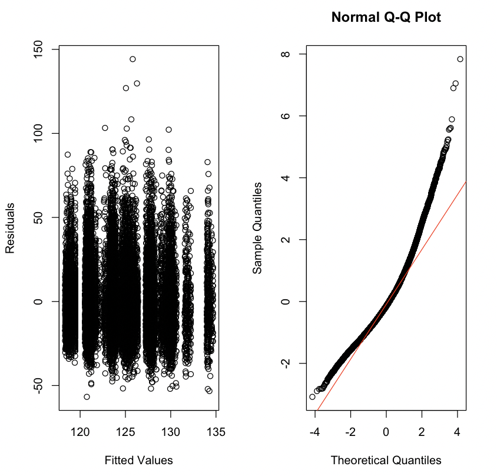

library(HDSinRdata)
library(tidyverse)
library(broom)
library(car)
data(NHANESsample)10 Linear Regression
This chapter will introduce you to linear regression analysis in R. We will cover how to fit linear regression models, check model assumptions using diagnostic plots, change model formulas by adding transformations and interactions, calculate performance metrics, and perform variable selection using stepwise selection.
For this chapter, we will use the NHANESsample dataset seen in Chapter 4. The sample contains lead, blood pressure, BMI, smoking status, alcohol use, and demographic variables from NHANES 1999-2018. Variable selection and feature engineering were conducted in an effort to replicate the regression analyses conducted by Huang (2022). Use the help operator ?NHANESsample to read the variable descriptions. Note that we ignore survey weights for this analysis.
We will use the broom package (Robinson, Hayes, and Couch 2023) to present the estimated coefficients for our regression models and the car package to compute variance inflation factors.
10.1 Simple Linear Regression
In Chapter 4, we presented some initial exploratory analysis for this data. In this chapter, we will use linear regression to understand the association between blood lead levels and systolic blood pressure, adjusting for possible confounders. Replicating the analysis of Huang (2022), we create summary columns for systolic and diastolic blood pressure. If an observation has one blood pressure reading, then we use that value. If there is more than one blood pressure reading, then we drop the first observation and average the rest. We do a complete case analysis by dropping any observation with NA values. This leaves us with 30,405 observations.
NHANESsample$SBP <- apply(NHANESsample[,c("SBP1", "SBP2", "SBP3",
"SBP4")], 1,
function(x) case_when(sum(!is.na(x)) == 0 ~ NA,
sum(!is.na(x)) == 1 ~ sum(x, na.rm=TRUE),
sum(!is.na(x)) > 1 ~ mean(x[-1],
na.rm=TRUE)))
NHANESsample$DBP <- apply(NHANESsample[,c("DBP1", "DBP2", "DBP3",
"DBP4")], 1,
function(x) case_when(sum(!is.na(x)) == 0 ~ NA,
sum(!is.na(x)) == 1 ~ sum(x, na.rm=TRUE),
sum(!is.na(x)) > 1 ~ mean(x[-1],
na.rm=TRUE)))
nhanes_df <- na.omit(subset(NHANESsample,
select= -c(SBP1, SBP2, SBP3, SBP4, DBP1,
DBP2, DBP3, DBP4)))
dim(nhanes_df)
#> [1] 30405 15Next, we make sure any categorical variables are coded as factors.
nhanes_df$SEX <- as.factor(nhanes_df$SEX)
nhanes_df$RACE <- as.factor(nhanes_df$RACE)
nhanes_df$EDUCATION <- as.factor(nhanes_df$EDUCATION)
nhanes_df$BMI_CAT <- as.factor(nhanes_df$BMI_CAT)
nhanes_df$LEAD_QUANTILE <- as.factor(nhanes_df$LEAD_QUANTILE)We will start with simple linear regression. Below, we plot the relationship between blood lead level and systolic blood pressure. For a simple linear regression scenario with a single continuous independent variable, a scatter plot allows us to easily visualize whether we meet the assumptions underlying linear regression. The survey sampling for the NHANES survey allows us to assume that each observation is independent. Looking at the plots below, we expect to see that the average systolic blood pressure increases linearly with blood lead level and that the observations look normally distributed with equal variance along that line. Below, we do not observe that to be the case. We will come back to this in the section on transformations and interactions.
plot(nhanes_df$LEAD, nhanes_df$SBP,
xlab = "Blood Lead Level", ylab = "Systolic Blood Pressure",
pch=16)Despite our observations above, we will continue by fiting a simple linear regression model to explain the association between SBP and LEAD. The function lm(formula = y ~ x, data) fits a linear model in R. The first argument is the formula of the linear model: on the left hand side of the ~ we put the outcome variable, and on the right hand side we put the independent variable. When we have multiple indepedent variables we separate them with a + (e.g. y~x1+x2). The output of this function is an lm object.
We can call the summary() function on this object to print a summary of the model, which includes the estimated coefficients, information about the residuals, the R-squared and adjusted R-squared values, and the F-statistic. Recall, that we previously used the summary() function to get summary statistics about a vector. This is an example of how multiple functions can have the same name. R figues out which summary() function to use by identifying that the argument we passed in is a lm object.
simp_model <- lm(formula = SBP~LEAD, data = nhanes_df)
summary(simp_model)
#>
#> Call:
#> lm(formula = SBP ~ LEAD, data = nhanes_df)
#>
#> Residuals:
#> Min 1Q Median 3Q Max
#> -96.36 -12.52 -2.79 9.36 140.88
#>
#> Coefficients:
#> Estimate Std. Error t value Pr(>|t|)
#> (Intercept) 120.665 0.149 807.1 <2e-16 ***
#> LEAD 1.708 0.058 29.4 <2e-16 ***
#> ---
#> Signif. codes: 0 '***' 0.001 '**' 0.01 '*' 0.05 '.' 0.1 ' ' 1
#>
#> Residual standard error: 18.5 on 30403 degrees of freedom
#> Multiple R-squared: 0.0277, Adjusted R-squared: 0.0277
#> F-statistic: 867 on 1 and 30403 DF, p-value: <2e-16To visualize this model, we can add the estimated regression line to our scatter plot from above. In ggplot2, this can be done with the geom_smooth() function. In base R, we use the abline() function, which can take in a regression model as an input. We can see that the estimated regression line does not fit our data very well.
plot(nhanes_df$LEAD, nhanes_df$SBP,
ylab=c("Systolic Blood Pressure"),
xlab=c("Blood Lead Level"), pch=16)
abline(simp_model, col=2, lwd=2)10.1.1 Practice Question
Fit a simple linear regression model with SBP as the outcome and AGE as the independent variable. The estimated coefficient for AGE should be 0.47693. Then, plot these two variables against each other and add the estimated regression line to the plot, as we did above. You should see that this regression has a better fit than the previous one.
# Insert your solution here:10.2 Multiple Linear Regression
We now create a model that is similar to the previous one except that it also adjusts for age and sex. To add these variables into the model, we have to specify a new formula. Below, we fit this model and then print a summary, again using the summary() function.
adj_model <- lm(SBP ~ LEAD + AGE + SEX, data = nhanes_df)
summary(adj_model)
#>
#> Call:
#> lm(formula = SBP ~ LEAD + AGE + SEX, data = nhanes_df)
#>
#> Residuals:
#> Min 1Q Median 3Q Max
#> -65.62 -10.59 -1.55 8.55 131.60
#>
#> Coefficients:
#> Estimate Std. Error t value Pr(>|t|)
#> (Intercept) 101.78541 0.30353 335.34 < 2e-16 ***
#> LEAD 0.40007 0.05525 7.24 4.5e-13 ***
#> AGE 0.46193 0.00557 82.97 < 2e-16 ***
#> SEXFemale -2.77774 0.19567 -14.20 < 2e-16 ***
#> ---
#> Signif. codes: 0 '***' 0.001 '**' 0.01 '*' 0.05 '.' 0.1 ' ' 1
#>
#> Residual standard error: 16.6 on 30401 degrees of freedom
#> Multiple R-squared: 0.212, Adjusted R-squared: 0.212
#> F-statistic: 2.72e+03 on 3 and 30401 DF, p-value: <2e-16We can also extract the estimated regression coefficients from the model using the coef() function or by using the tidy() function from the broom package. This function puts the coefficient estimates, standard errors, statistics, and p-values in a data frame. We can also add a confidence interval by specifying conf.int = TRUE. Below, we add a 95% confidence interval (which is the default value for conf.level).
coef(adj_model)
#> (Intercept) LEAD AGE SEXFemale
#> 101.785 0.400 0.462 -2.778tidy(adj_model, conf.int=TRUE, conf.level=0.95)
#> # A tibble: 4 × 7
#> term estimate std.error statistic p.value conf.low conf.high
#> <chr> <dbl> <dbl> <dbl> <dbl> <dbl> <dbl>
#> 1 (Intercept) 102. 0.304 335. 0 101. 102.
#> 2 LEAD 0.400 0.0552 7.24 4.54e-13 0.292 0.508
#> 3 AGE 0.462 0.00557 83.0 0 0.451 0.473
#> 4 SEXFemale -2.78 0.196 -14.2 1.36e-45 -3.16 -2.39Some other useful summary functions are resid(), which returns the residual values for the model, and fitted(), which returns the fitted values or estimated y values. We can also predict on new data using the predict() function. Below we look at the distribution of the residual values and then plot the fitted vs. true values. We observe some extreme residual values as well as the fact that the absolute residual values increase with increased blood pressure values.
summary(resid(adj_model))
#> Min. 1st Qu. Median Mean 3rd Qu. Max.
#> -65.6 -10.6 -1.6 0.0 8.5 131.6plot(nhanes_df$SBP, fitted(adj_model),
xlab ="True Systolic Blood Pressure",
ylab="Predicted Systolic Blood Pressure", pch=16)
abline(a=0, b=1, col="red", lwd=2)We can next perform a nested hypothesis test between our simple linear regresion model and our adjusted model using the anova() function. We pass both models to this function along with the argument test="F" to indicate that we are performing an F-test. The print() function shows the two tested models along with the associated p-value, which indicates a significantly better fit for the adjusted model.
print(anova(simp_model, adj_model, test="F"))
#> Analysis of Variance Table
#>
#> Model 1: SBP ~ LEAD
#> Model 2: SBP ~ LEAD + AGE + SEX
#> Res.Df RSS Df Sum of Sq F Pr(>F)
#> 1 30403 10375769
#> 2 30401 8413303 2 1962467 3546 <2e-16 ***
#> ---
#> Signif. codes: 0 '***' 0.001 '**' 0.01 '*' 0.05 '.' 0.1 ' ' 1The model summary for the adjusted model displays the estimated coefficient for sex as SEXFemale, which indicates that the reference level for sex is male. If we want to change our reference level, we can reorder the factor variable either by using the factor() function and specifying Female as the first level or by using the relevel() function. The ref argument in the relevel() function specifies the new reference level. Now, when we run the model, we can see that the estimated coefficient for sex is labeled as SEXMale.
nhanes_df$SEX <- relevel(nhanes_df$SEX, ref="Female")
adj_model2 <- lm(SBP ~ LEAD + AGE + SEX, data = nhanes_df)
tidy(adj_model2)
#> # A tibble: 4 × 5
#> term estimate std.error statistic p.value
#> <chr> <dbl> <dbl> <dbl> <dbl>
#> 1 (Intercept) 99.0 0.293 338. 0
#> 2 LEAD 0.400 0.0552 7.24 4.54e-13
#> 3 AGE 0.462 0.00557 83.0 0
#> 4 SEXMale 2.78 0.196 14.2 1.36e-45The formula passed to the lm() function also allows us to use the . to indicate that we would like to include all remaining columns as independent variables or the - to exclude variables. Below, we show how we could use these to fit a model with LEAD, AGE, and SEX as included covariates by excluding all other variables instead of by specifying these three variables themselves.
lm(SBP ~ . - ID - RACE - EDUCATION - INCOME - SMOKE - YEAR - BMI_CAT -
LEAD_QUANTILE - DBP - ALC - HYP - RACE, data = nhanes_df)
#>
#> Call:
#> lm(formula = SBP ~ . - ID - RACE - EDUCATION - INCOME - SMOKE -
#> YEAR - BMI_CAT - LEAD_QUANTILE - DBP - ALC - HYP - RACE,
#> data = nhanes_df)
#>
#> Coefficients:
#> (Intercept) AGE SEXMale LEAD
#> 99.008 0.462 2.778 0.40010.3 Diagnostic Plots and Measures
We can tell from the above plot that our model doesn’t have a great fit. We will use some further diagnostic plots and measures to learn more. R has some built-in plots available for linear regression models, which can be displayed using the plot() function. Similar the summary() function, this function acts differently when passed an lm object. The four plots include (a) Residuals vs. Fitted, (b) a QQ-plot for the residuals, (c) Standardized residuals (sqrt) vs. Fitted, and (d) Standardized Residuals vs. Leverage. In the last plot, you may observe that there is a dashed line. Any points outside of these lines have a Cook’s distance of greater than 0.5. Additionally, points with labels correspond to the points with the largest residuals, so this last plot summarizes the outliers, leverage, and influential points. The plots below show that our residuals do not look normally distributed and that we have may have some high leverage points.
par(mfrow=c(2,2)) # plots all four plots together
plot(adj_model)10.3.1 Normality
Beyond the default plots, we can also plot a histogram of the residuals and a qq-plot. The qqnorm() and qqline() functions can take in the residuals from our model as an argument. The latter adds the theoretical red line for reference. As both the histogram and qq-plot shown, the residuals are positively skewed, and thus the assumption of normality is not satisfied for our residuals. Later in this chapter, we will discuss how we might transform this dataset and/or model to satisfy this assumption.
par(mfrow=c(1,2)) # plot next to each other
hist(resid(adj_model), xlab="Residuals",
main="Histogram of Residuals")
qqnorm(resid(adj_model))
qqline(resid(adj_model),col="red") 
Instead of using the direct residuals, we can create the plots above using the standardized residuals with the function rstandard(). The standardized residuals are the raw residuals divided by an estimate of the standard deviation for the residual, which will be different for each observation.
par(mfrow=c(1,2))
hist(rstandard(adj_model), xlab="Standardized Residuals",
main="Histogram of Standardized Residuals", cex.main=0.75)
qqnorm(rstandard(adj_model), cex.main=0.75)
qqline(rstandard(adj_model),col="red")10.3.2 Homoscedasticity, Linearity, and Collinearity
We can also create a residual vs. fitted plot or plot the residuals against included covariates. Below, we plot the blood lead level against the residuals. In both plots, we are looking for the points to be spread roughly evenly around 0 with no discerning pattern. However, both plots shows a tunnel shape, indicating a growing and shrinking variance of residuals by level, respectively. This indicates that we are violating the homoscedasticity assumption.
par(mfrow=c(1,2))
plot(fitted(adj_model), resid(adj_model), xlab="Fitted Values",
ylab="Residuals")
plot(nhanes_df$LEAD, resid(adj_model), xlab="Blood Lead Level",
ylab="Residuals")To quantify any collinearity between the included covariates, we can calculate the variance inflation factors. The vif() function in the car package allows us to calculate the variance inflation factors or generalized variance inflation factors for all covariates. In our case, all the VIF values are around 1, indicating low levels of collinearity.
vif(adj_model)
#> LEAD AGE SEX
#> 1.12 1.07 1.0510.3.3 Practice Question
Fit a linear regression model with SBP as the outcome and with INCOME, RACE, EDUCATION, and ALC as independent variables. Then, plot the residuals vs. the fitted values as well and make a QQ plot for the standardized residuals from this model. They should look like Figure 10.1.

# Insert your solution here: 10.3.4 Leverage and Influence
We may also be interested in how each observation is influencing the model. Leverage values measure how much an individual observation’s \(y\) value influences its own predicted value and indicate whether observations have extreme predictor values compared to the rest of the data. Leverage values range from 0 to 1 and sum to the number of estimated coefficients. Observations with high leverage have the potential to significantly impact the estimated regression coefficients and the overall fit of the model. Therefore, examining leverage values helps identify observations that may be influential or outliers. Below we find the ten highest leverage values and then find those observations in the data.
sort(hatvalues(adj_model), decreasing=TRUE)[1:10]
#> 23016 2511 3091 21891 3661 511 21892 15321 6511
#> 0.03899 0.02936 0.02270 0.01484 0.01443 0.01399 0.01159 0.01080 0.01022
#> 3452
#> 0.00968
nhanes_df[order(hatvalues(adj_model), decreasing=TRUE),] %>%
select(c(SBP, LEAD, AGE, SEX)) %>% head(10)
#> SBP LEAD AGE SEX
#> 23016 129 61.3 38 Male
#> 2511 139 54.0 61 Male
#> 3091 154 48.0 72 Male
#> 21891 123 38.9 54 Male
#> 3661 101 38.0 39 Male
#> 511 118 37.3 34 Male
#> 21892 107 33.7 21 Male
#> 15321 104 33.1 39 Male
#> 6511 175 33.0 71 Male
#> 3452 113 31.4 38 MaleSome other measures of influence are the DFBETAs and Cook’s distance, which measure how much each observation influences the estimated coefficients and the estimated y values, respectively. The influence.measures() function provides a set of measures that quantify the influence of each observation on a linear regression model: these include the DFBETAS for each model variable, DFFITS, covariance ratios, Cook’s distances, and the leverage values. The output returns the values in a matrix called infmat, which we convert to a data frame below.
inf_mat <- influence.measures(adj_model)[['infmat']]
as.data.frame(inf_mat) %>% head()
#> dfb.1_ dfb.LEAD dfb.AGE dfb.SEXF dffit cov.r cook.d
#> 1 0.013880 -0.017564 -1.68e-02 0.008319 -0.03427 1.000 2.93e-04
#> 2 -0.000732 0.000348 -3.92e-05 0.001051 -0.00150 1.000 5.59e-07
#> 3 0.022137 0.005749 -1.45e-02 -0.016843 0.02964 0.999 2.19e-04
#> 4 0.000499 0.001043 -2.07e-03 0.001631 -0.00312 1.000 2.43e-06
#> 5 0.002259 -0.002725 -2.50e-03 0.000973 -0.00498 1.000 6.20e-06
#> 6 -0.001283 -0.000559 1.65e-03 -0.002929 -0.00441 1.000 4.87e-06
#> hat
#> 1 1.90e-04
#> 2 6.61e-05
#> 3 8.28e-05
#> 4 1.18e-04
#> 5 2.35e-04
#> 6 8.09e-0510.4 Interactions and Transformations
We now try to improve our model. To start, we look at potential transformations for our outcome variable. We will consider a log transformation for both our outcome, systolic blood pressure, and our predictor of interest, blood lead level. Both of these variables have a fairly skewed distribution and may benefit from such a transformation. Below, you can see that the transformed variables have distributions that are more symmetrical.
par(mfrow=c(2,2))
hist(nhanes_df$SBP, xlab="Systolic Blood Pressure", main="")
hist(log(nhanes_df$SBP), xlab="Log Systolic Blood Pressure", main="")
hist(nhanes_df$LEAD, xlab="Blood Lead Level", main="")
hist(log(nhanes_df$LEAD), xlab="Log Blood Lead Level", main="")To add a transformation to a model, we can simply apply the transformation in the formula for lm(). We will calculate the adjusted R-squared for each potential model to compare their fits in addition to plotting the four qq-plots. Both indicate that the model with the log-log transformation (that is, with a log transformation applied to both the SBP and the LEAD variables) is the best fit though the model with just a log transformation for SBP has a similar qq-plot.
model_nlog_nlog <- lm(SBP ~ LEAD + AGE + SEX, data = nhanes_df)
model_log_nlog <- lm(log(SBP) ~ LEAD + AGE + SEX, data = nhanes_df)
model_nlog_log <- lm(SBP ~ log(LEAD) + AGE + SEX, data = nhanes_df)
model_log_log <- lm(log(SBP) ~ log(LEAD) + AGE + SEX,
data = nhanes_df)summary(model_nlog_nlog)$adj.r.squared
#> [1] 0.212
summary(model_log_nlog)$adj.r.squared
#> [1] 0.215
summary(model_nlog_log)$adj.r.squared
#> [1] 0.212
summary(model_log_log)$adj.r.squared
#> [1] 0.215par(mfrow=c(2,2))
qqnorm(rstandard(model_nlog_nlog), main="Original Model")
qqline(rstandard(model_nlog_nlog),col="red")
qqnorm(rstandard(model_log_nlog), main="Log SBP")
qqline(rstandard(model_log_nlog),col="red")
qqnorm(rstandard(model_nlog_log), main="Log Lead")
qqline(rstandard(model_nlog_log),col="red")
qqnorm(rstandard(model_log_log), main="Log SBP, Log Lead")
qqline(rstandard(model_log_log),col="red")10.4.1 Practice Question
Instead of adding in a log transformation for LEAD like we did above, try a square root transformation sqrt(LEAD) and an inverse transformation 1/LEAD while keeping the log transformation for the outcome log(SBP). Which model fits better according to the adjusted R-squared? The resulting QQ plots should look like Figure 10.2.

# Insert your solution here:Additionally, we might consider polynomial transformations. The poly(x, degree=1) function allows us to specify a polynomial transformation where we might have higher degree terms. We do not pursue this for this particular example, but we show some example code below for creating such a transformation (in this case, a cubic transformation for blood lead level).
model_poly <- lm(SBP ~ poly(LEAD, 3) + AGE + SEX, data = nhanes_df)We can summarize the outcome for our log-log model using the tidy() function again. We observe small p-values for each estimated coefficient.
tidy(model_log_log)
#> # A tibble: 4 × 5
#> term estimate std.error statistic p.value
#> <chr> <dbl> <dbl> <dbl> <dbl>
#> 1 (Intercept) 4.62 0.00239 1932. 0
#> 2 log(LEAD) 0.00891 0.00118 7.53 5.34e-14
#> 3 AGE 0.00349 0.0000457 76.4 0
#> 4 SEXMale 0.0254 0.00155 16.4 2.06e-60Another component that we may want to add to our model is an interaction term. For example, we may consider an interaction between sex and blood lead level. We add an interaction to the formula using a : between the two variables. The output below shows that the coefficient for this interaction is indeed significant.
model_interaction <- lm(log(SBP) ~ log(LEAD) + AGE + SEX +
SEX:log(LEAD), data=nhanes_df)
summary(model_interaction)
#>
#> Call:
#> lm(formula = log(SBP) ~ log(LEAD) + AGE + SEX + SEX:log(LEAD),
#> data = nhanes_df)
#>
#> Residuals:
#> Min 1Q Median 3Q Max
#> -0.6981 -0.0816 -0.0049 0.0752 0.6599
#>
#> Coefficients:
#> Estimate Std. Error t value Pr(>|t|)
#> (Intercept) 4.62e+00 2.39e-03 1936.2 <2e-16 ***
#> log(LEAD) 2.36e-02 1.68e-03 14.1 <2e-16 ***
#> AGE 3.45e-03 4.58e-05 75.3 <2e-16 ***
#> SEXMale 3.32e-02 1.67e-03 19.9 <2e-16 ***
#> log(LEAD):SEXMale -2.66e-02 2.16e-03 -12.3 <2e-16 ***
#> ---
#> Signif. codes: 0 '***' 0.001 '**' 0.01 '*' 0.05 '.' 0.1 ' ' 1
#>
#> Residual standard error: 0.128 on 30400 degrees of freedom
#> Multiple R-squared: 0.219, Adjusted R-squared: 0.219
#> F-statistic: 2.13e+03 on 4 and 30400 DF, p-value: <2e-1610.5 Evaluation Metrics
Besides the adjusted R-squared, there are a few other metrics that can help us to understand how well our model fits the data and to help with model selection. The AIC() and BIC() functions find the Akaike information criterion (AIC) and Bayesian information criterion (BIC) values, respectively. Both AIC and BIC balance the trade-off between model complexity and goodness of fit. AIC takes into account both the goodness of fit (captured by the likelihood of the model) and the complexity of the model (captured by the number of parameters used). Lower AIC values are preferable. BIC is similar to AIC but has a stronger penalty for model complexity compared to AIC. Both measures indicate a preference for keeping the interaction term.
AIC(model_log_log)
#> [1] -38610
AIC(model_interaction)
#> [1] -38760BIC(model_log_log)
#> [1] -38569
BIC(model_interaction)
#> [1] -38710The predict() function allows us to calculate the predicted y values. When called on a model with no data specified, it returns the predicted values for the training data. We could also specify new data using the newdata argument. The new data provided must contain the columns given in the model formula. Below, we use the predict() function to find the predicted values from our model and then calculate the mean absolute error (MAE) and mean squared error (MSE) for our model. MAE is less sensitive to outliers compared to MSE. The mean absolute error indicates that our model has fairly high residuals on average. While this model may be helpful to understand the relationship between blood lead level and systolic blood pressure, it would not be very useful as a tool to predict the latter.
pred_y <- predict(model_interaction)mae <- mean(abs(nhanes_df$SBP - pred_y))
mae
#> [1] 119mse <- mean((nhanes_df$SBP- pred_y)^2)
mse
#> [1] 1450210.6 Stepwise Selection
So far we have ignored the other variables in the data frame. When performing variable selection, there are multiple methods to use. We will end this chapter by demonstrating how to implement one such method, stepwise selection, in R. The step() function takes in an initial model to perform stepwise selection on along with a direction direction (“forward”, “backward”, or “both”), and a scope scope. The scope specifies the lower and upper model formulas to consider. Below, we use forward selection so the lower formula is the formula for our current model and the upper formula contains the other covariates we are considering adding in. These two formulas must be nested - that is, all terms in the lower formula must be contained in the upper formula.
By default, the step() function prints each step in the process and uses AIC to guide its decisions. We can set trace=0 to avoid the print behavior and update the argument k to log(n) to use BIC, where n is the number of observations. Below we see that the algorithm first adds in race, then BMI, then income, then education, and then smoking status. In fact, all variables were added to the model! The final output is an lm object that we can use just like the ones earlier in this chapter. We get the summary of the final model and see that the adjusted R-squared has improved to 0.2479.
lower_formula <- "log(SBP) ~ log(LEAD) + AGE + SEX:log(LEAD)"
upper_formula <- "log(SBP) ~ log(LEAD) + AGE + SEX:log(LEAD) + SEX +
RACE + EDUCATION + SMOKE + INCOME + BMI_CAT"
mod_step <- step(model_interaction, direction = 'forward',
scope = list(lower = lower_formula,
upper = upper_formula))
#> Start: AIC=-125048
#> log(SBP) ~ log(LEAD) + AGE + SEX + SEX:log(LEAD)
#>
#> Df Sum of Sq RSS AIC
#> + RACE 4 9.16 488 -125605
#> + BMI_CAT 2 8.97 488 -125597
#> + INCOME 1 2.87 494 -125222
#> + EDUCATION 2 1.90 495 -125160
#> + SMOKE 2 0.35 497 -125065
#> <none> 497 -125048
#>
#> Step: AIC=-125605
#> log(SBP) ~ log(LEAD) + AGE + SEX + RACE + log(LEAD):SEX
#>
#> Df Sum of Sq RSS AIC
#> + BMI_CAT 2 7.16 481 -126050
#> + INCOME 1 1.80 486 -125715
#> + EDUCATION 2 1.34 487 -125684
#> + SMOKE 2 0.13 488 -125609
#> <none> 488 -125605
#>
#> Step: AIC=-126050
#> log(SBP) ~ log(LEAD) + AGE + SEX + RACE + BMI_CAT + log(LEAD):SEX
#>
#> Df Sum of Sq RSS AIC
#> + INCOME 1 1.617 479 -126151
#> + EDUCATION 2 1.112 480 -126117
#> + SMOKE 2 0.261 481 -126063
#> <none> 481 -126050
#>
#> Step: AIC=-126151
#> log(SBP) ~ log(LEAD) + AGE + SEX + RACE + BMI_CAT + INCOME +
#> log(LEAD):SEX
#>
#> Df Sum of Sq RSS AIC
#> + EDUCATION 2 0.418 479 -126173
#> + SMOKE 2 0.258 479 -126163
#> <none> 479 -126151
#>
#> Step: AIC=-126173
#> log(SBP) ~ log(LEAD) + AGE + SEX + RACE + BMI_CAT + INCOME +
#> EDUCATION + log(LEAD):SEX
#>
#> Df Sum of Sq RSS AIC
#> + SMOKE 2 0.286 479 -126187
#> <none> 479 -126173
#>
#> Step: AIC=-126187
#> log(SBP) ~ log(LEAD) + AGE + SEX + RACE + BMI_CAT + INCOME +
#> EDUCATION + SMOKE + log(LEAD):SEXsummary(mod_step)
#>
#> Call:
#> lm(formula = log(SBP) ~ log(LEAD) + AGE + SEX + RACE + BMI_CAT +
#> INCOME + EDUCATION + SMOKE + log(LEAD):SEX, data = nhanes_df)
#>
#> Residuals:
#> Min 1Q Median 3Q Max
#> -0.6713 -0.0799 -0.0039 0.0738 0.6797
#>
#> Coefficients:
#> Estimate Std. Error t value Pr(>|t|)
#> (Intercept) 4.61e+00 3.32e-03 1391.51 < 2e-16 ***
#> log(LEAD) 2.28e-02 1.69e-03 13.47 < 2e-16 ***
#> AGE 3.48e-03 4.85e-05 71.87 < 2e-16 ***
#> SEXMale 3.47e-02 1.65e-03 20.94 < 2e-16 ***
#> RACEOther Hispanic -7.11e-03 3.22e-03 -2.20 0.027 *
#> RACENon-Hispanic White -4.45e-03 2.20e-03 -2.02 0.043 *
#> RACENon-Hispanic Black 3.37e-02 2.47e-03 13.66 < 2e-16 ***
#> RACEOther Race 6.27e-03 3.39e-03 1.85 0.064 .
#> BMI_CAT25<BMI<30 1.51e-02 1.84e-03 8.23 < 2e-16 ***
#> BMI_CATBMI>=30 3.78e-02 1.83e-03 20.62 < 2e-16 ***
#> INCOME -3.89e-03 5.00e-04 -7.78 7.6e-15 ***
#> EDUCATIONHS -1.94e-05 2.19e-03 -0.01 0.993
#> EDUCATIONMoreThanHS -8.69e-03 2.07e-03 -4.20 2.6e-05 ***
#> SMOKEQuitSmoke -7.56e-03 1.80e-03 -4.21 2.6e-05 ***
#> SMOKEStillSmoke -4.04e-03 1.94e-03 -2.08 0.038 *
#> log(LEAD):SEXMale -2.61e-02 2.12e-03 -12.28 < 2e-16 ***
#> ---
#> Signif. codes: 0 '***' 0.001 '**' 0.01 '*' 0.05 '.' 0.1 ' ' 1
#>
#> Residual standard error: 0.126 on 30389 degrees of freedom
#> Multiple R-squared: 0.248, Adjusted R-squared: 0.248
#> F-statistic: 669 on 15 and 30389 DF, p-value: <2e-1610.7 Recap Video
10.8 Exercises
For these exercises, we will continue using the nhanes_df data.
Construct a linear model using
DBPas the output andLEAD,AGE, andEVER_SMOKEas features, and print the output.Use forward stepwise selection to add possible interactions to the linear model from the previous question.
Draw a QQ plot for the model in Question 2, and describe the distribution that you observe.
Report the MAE and MSE of the model developed in Question 2. Then, find the row numbers of the observations with the top 5 Cook’s Distance values for this model.
Look at some diagnostic plots for the model and use what you observe from these plots to choose a transformation that will improve the fit of this model. Then, fit and summarize this new model with the transformation included. How do the MSE and MAE of the new model compare to the previous one? Note that your predictions will be on the transformed scale so you’ll need to convert them to the correct scale.